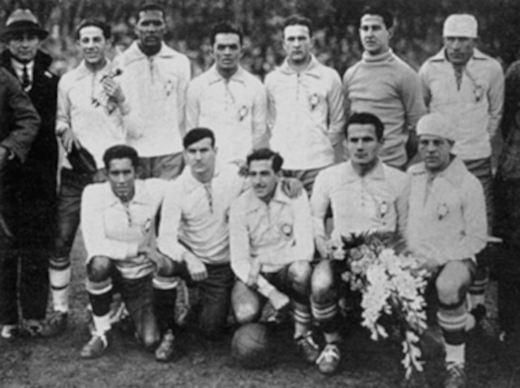
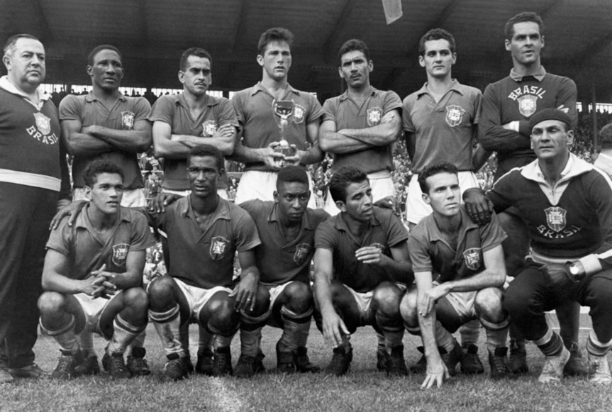
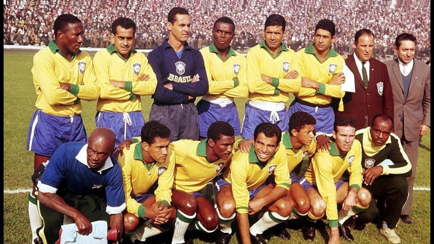
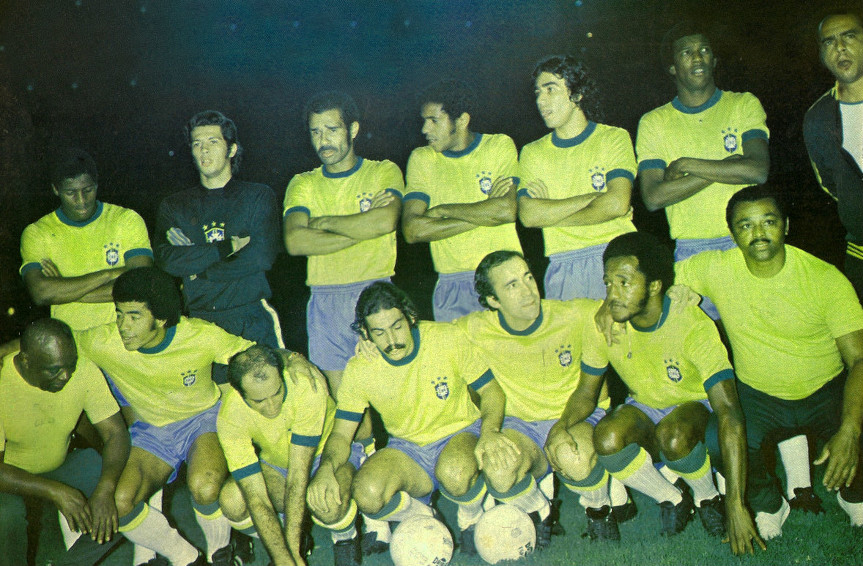
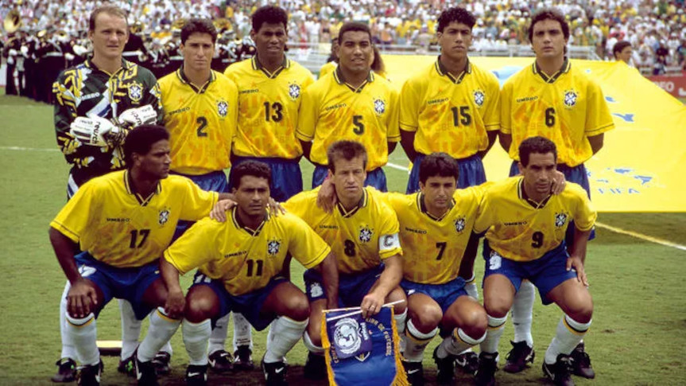
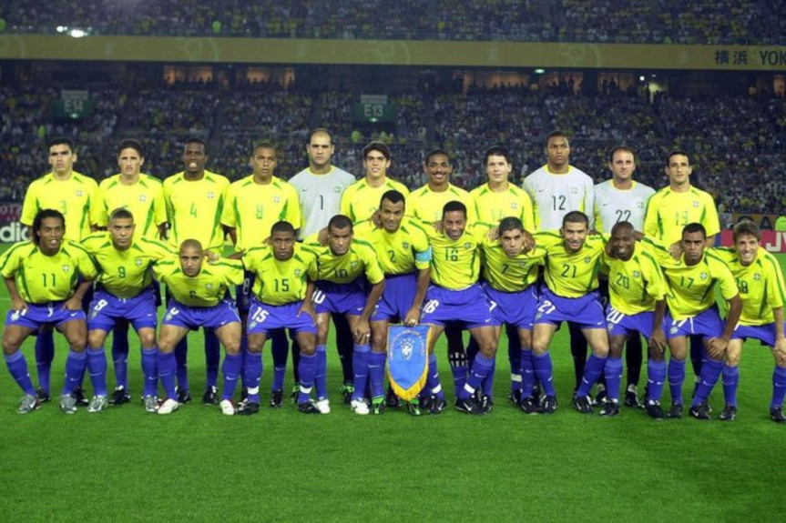

Foi formada, oficialmente, com a fundação em 1914 da Federação Brasileira de Sports, a atual CBF (Confederação Brasileira de Futebol) que adotou o nome atual em 1979. Antes porém, a CBF já se chamou Federação Brasileira de Futebol em 1915 e Confederação Brasileira de Desportos (de 1916 a 1979).
A primeira participação em Copas
A edição de 1930 da Copa do Mundo marcou a primeira participação da Seleção Brasileira de Futebol nessa competição. Desde então, seria o único país a participar de todas as edições do torneio da FIFA até a última edição, realizada em 2022.

O primeiro título de Copa ⭐
No dia 29 de junho de 1958, Brasil alcançava o topo do mundo na Suécia ao bater os anfitriões por 5 a 2 em uma histórica decisão. Campanha da Canarinho e o Mundial foram marcados por curiosidades.
A história da maior vencedora de Copas do Mundo começava há exatos 62 anos. No dia 29 de junho de 1958, a Seleção Brasileira conquistava, na Suécia, a primeira das cinco estrelas que ostenta em seu uniforme.
Com direito a show do então menino Pelé na histórica decisão diante dos donos da casa, o brasileiro pôde cantar, pela primeira vez, "A taça do mundo é nossa (...)".
Grupo campeão em 1958: Gilmar, Castilho, De Sordi, Djalma Santos, Dino Sani, Mauro, Bellini, Orlando, Nilton Santos, Oreco, Didi, Zito, Moacir, Dida, Garrincha, Zagallo, Pelé, Pepe, Joel, Vavá, Mazzola e Zózimo. Técnico: Vicente Feola.

O BI-CAMPEONATO ⭐ ⭐
Na Copa do Mundo FIFA de 1962, o Brasil conseguiu seu segundo título com Garrincha e Vavá como as grandes estrelas. Garrincha fez gols de cabeça e também de perna esquerda e ainda jogou com febre a final, especialmente após Pelé ter se machucado no segundo jogo e estar impossibilitado de jogar pelo resto da Copa do Mundo.
Na estreia, o Brasil bateu o México por 2 a 0 com grande gol de Pelé em que driblou toda a defesa mexicana antes de tocar na saída de Antonio Carbajal. No segundo jogo, contra a Tchecoslováquia, Pelé sofreu contusão e não voltaria a atuar nesta Copa. Amarildo teve a dificílima missão de substituir o rei e foi bem sucedido. O Brasil empatou com a Tchecoslováquia em 0 a 0, derrotou a Espanha em jogo dramático e de virada, 2 a 1.
O Brasil só decolou realmente a partir das quartas de final, quando Garrincha chamou para si a responsabilidade e dizimou o English Team: 3 a 1. Nas semifinais o Brasil venceu o Chile dono da casa por 4 a 2 no Estádio Nacional lotado. Brasil e Tchecoslováquia novamente se encontrariam na final. Masopust abriu o placar. O Brasil empatou com Amarildo. Zito virou e Vavá marcou o terceiro gol da Seleção. Com o placar em 3 a 1 o Brasil se sagraria bicampeão mundial de futebol.

O TRI-CAMPEONATO ⭐⭐⭐
Há 43 anos, a Seleção Brasileira do Furacão bateu Portugal por 1 a 0 diante de 99 mil torcedores
Em 9 de julho de 1972, há 43 anos, um Furacão passou pelo Maracanã e sacudiu de emoção 99 mil torcedores que assistiam à final da Taça Independência, torneio em comemoração aos 150 anos da Independência do Brasil. Aos 44 do segundo tempo, de cabeça, Jairzinho fez o gol da vitória da Seleção Brasileira sobre Portugal por 1 a 0 e garantiu mais um troféu para a galeria vitoriosa da amarelinha.
A Taça Independência foi considerada na época uma miniCopa, já que 20 seleções de todo o mundo participaram do torneio. Entre elas, a França, a Tchecoslováquia, a Escócia, o Irã, a Irlanda e nossos rivais sul-americanos Argentina, Uruguai, Colômbia, Chile, Peru, Paraguai e Venezuela. O torneio foi realizado em dez cidades brasileiras.

O TETRA ⭐⭐⭐⭐
Após conquistar o tricampeonato em 1970, o Brasil passou por um longo jejum de títulos na Copa do Mundo. Somente em 1994 o povo brasileiro pôde celebrar mais uma vez a conquista de um Mundial.
A seleção comandada por Carlos Alberto Parreira não apresentou um futebol de grande qualidade, sendo marcado por um estilo de jogo mais pragmático, quase “atuando por uma bola”. Mas o ataque tinha Bebeto e principalmente Romário inspirados, formando uma das melhores duplas ofensivas do Brasil na história.
No dia 17 de julho de 1994, Brasil e Itália disputaram a final da competição. Com grandes nomes em sua seleção, os italianos fizeram um confronto complicado. A seleção brasileira tentou buscar o ataque tanto no tempo normal como na prorrogação, mas não conseguiu vencer a defesa italiana.
Com o empate sem gols, o título da Copa do Mundo foi decidido nas penalidades. Os zagueiros Baresi e Márcio Santos perderam suas cobranças iniciais. Em seguida, Albertini e Evani converteram para a Itália, com Romário e Branco empatando para o Brasil. Massaro perdeu sua cobrança, com grande defesa de Taffarel e Dunga colocou a seleção brasileira em vantagem.
Roberto Baggio, um dos craques da geração italiana, precisava converter sua cobrança para manter a Itália viva. Mas o camisa 10 errou seu chute e com isso o Brasil garantiu mais um título de Copa do Mundo para sua história.

O PENTA ⭐⭐⭐⭐⭐
O início do ciclo foi conturbado, com resultados ruins e diversas denúncias de corrupção envolvendo jogadores, dirigentes e treinadores. A pressão popular deu origem a duas CPIs. O Brasil se recuperou dentro de campo e conseguiu se classificar à Copa do Mundo de 2002 na última rodada.
Apesar de transmitidos nas primeiras horas da manhã devido à diferença de horários (os jogos vespertinos, por exemplo, eram transmitidos às 3 horas da madrugada), os jogos marcaram acima dos 60 pontos de Ibope na Grande São Paulo. A final entre Brasil e Alemanha fechou com 67 pontos e 91% de índice share, que registra o percentual de televisores sintonizados na emissora no horário da partida.
Na final, vitória sobre a Alemanha por 2 a 0 com dois gols de Ronaldo. A Alemanha estava sem Michael Ballack, suspenso. O Brasil foi considerado o favorito para vencer a partida pelas casas de apostas. Felipão: "No último jogo, começaram a circular boatos de quem seria o artilheiro. Chamei os dois (Ronaldo e Rivaldo), conversei com eles, eles brincaram entre eles. Eram situações criadas para que se houvesse alguma coisa [estaria precavido]". Pela conquista do título, cada membro da comissão técnica recebeu um prêmio de US$ 100 mil estipulados pela CBF. Desde o atacante Ronaldo, artilheiro da Copa com oito gols, ao massagista Jorge Luís Domingos, o "bicho" pelo penta foi o mesmo. Os pentacampeões também receberam outros R$ 104.683,19 pela participação nos contratos da CBF com Globo AmBev e Telemar, patrocinadoras da seleção.
